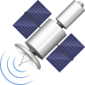

rayan
BAC PRO ARED
audiovisuels , reseau et equipement domestiques

 audiovisuel
reseau
equipement
domestique
audiovisuel
reseau
equipement
domestique
Présentation de la filière
Ce Baccalauréat Professionnel aborde l’ensemble des compétences professionnelles permettant au technicien d’exercer les activités liées :
A la préparation, l’installation et la mise en service de systèmes connectés dans les domaines de la domotique, l’audiovisuel multimédia et l’électroménager ;
A la maintenance de systèmes domotiques, d’audiovisuels multimédia et de produits électroménagers ;
Aux conseils d’achat et d’utilisation des produits constituant les systèmes.
Systèmes audiovisuels multimédias :
Téléviseur, vidéoprojecteur, home-cinéma, lecteur / enregistreur DVD et Blu-ray, serveur NAS,
Les antennes TNT et sattelites
Systèmes électrodomestiques :
four, lave-linge, lave-vaisselle, micro-ondes, réfrigérateur, table de cuisson
Les antennes TNT et sattelites
Système Domotique :